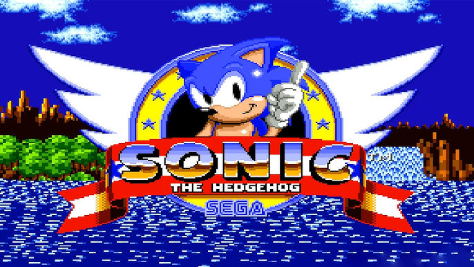

A videojáték-történet meghatározó pillanatai: Idővonal
A korai évek
1940 – Az első „videojáték”
Az első videójáték a New York-i Világkiállításon mutatkozik be. Edward U. Condon feltalál egy számítógépet, amely képes játszani az emberek ellen a „Nim” nevű játékot. A gép az esetek 90%-ában nyert.

1967 – A videójáték találkozik a televízióval
Ralph Baer megalkotja és megépíti a „Brown Box” nevű prototípus videojáték-konzolt, amely lehetővé teszi, hogy az emberek televízió képernyőn játszhassanak.

1972 – Megjelenik a Magnavox Odyssey
A Magnavox Odyssey a boltok polcaira kerül, lehetővé téve a játékosok számára, hogy először vihessenek haza játékkonzolt. Az eszköz Ralph Baer „Brown Box” prototípusán alapul.
Pong
Ugyanebben az évben, amikor az Odyssey forgalomba kerül, az Atari kiadja a „Pong” című játékot, és ezzel kezdetét veszi a videójáték-őrület.

1977 – Az Atari Video Computer System
Az Atari kiadja a Video Computer System-et, ismertebb nevén az Atari 2600-at. Ez az első modern konzol előfutára, és olyan klasszikus játékokat tartalmaz, mint a „Space Invaders”, „Donkey Kong” és „Frogger”.

1983 – A piac túltelítődése és az E.T. tragédiája
A piac összeomlik, amikor az Atari 2600-ra kiadják az „E.T.” játékot, amelyet a híres film alapján készítettek. A játékot széles körben a valaha készült legrosszabbként tartják számon, és az Atari végül több ezer példányt elásott belőle az új-mexikói sivatagban.
Érdekesség: 2015-ben kíváncsi ásatók megtalálták az elásott Atari 2600 játékokat, köztük a „Pac-Man”, „Ms. Pac-Man”, „Breakout”, „Star Raiders”, „Pele’s Soccer” és „Centipede” című játékokat. Ezeket később eBay-en árverezték el, több mint 100 000 dollár értékben.

Az ipar megveti a lábát
1985 – Megjelenik a Nintendo Entertainment System (NES)
A NES piacra dobása újra fellobbantja a fogyasztók lelkesedését, és gyerekek milliói válnak rabjává annak a felismerésnek, hogy „a hercegnő már megint egy másik kastélyban van”.
A Nintendo, amely eredetileg Japánban, az 1880-as évek végén kártyajátékokat gyártó cégként indult, az 1970-es években lépett be a videojáték-iparba, és a NES-szel forradalmasította azt. A NES játékai grafikailag jobbak voltak elődjeiknél, és a megnövelt memória több szintet és történetmesélést tett lehetővé.
Legendák születnek
Számos ikonikus játék jelent meg NES-re, köztük a „Super Mario Bros.”, „The Legend of Zelda”, „Final Fantasy” és még sok más. Ezeknek a játékoknak a folytatásai és mellékszálai a mai napig készülnek.


1988 – A játék találkozik a való világgal
Míg az 1980-as években a játékok többségében kitalált szereplők és fantáziavilágok szerepeltek, a fejlesztők elkezdtek a való világból is ihletet meríteni.
Példa erre a „Madden” amerikai foci játék-sorozat – John Madden legendás NFL edzőről és kommentátorról elnevezve –, amely azóta az egyik legsikeresebb és leghosszabb életű franchise lett Amerikában.
De Madden eleinte nem volt meggyőzve. Valójában csak akkor volt hajlandó részt venni, ha a játék minősége kiváló lesz.
„A francba ezzel, és veletek is. Vagy megcsináljuk rendesen, vagy sehogy.” – állítólag így szólt a fejlesztőkhöz.
1989 – Megjelenik a Sega Genesis
A következő generációs konzolok 1989-ben indultak, amikor a japán Sega kiadta a Genesis-t. Ez bemutatta nekünk egy új klasszikus karaktert: „Sonic, a sündisznó”. Sonic érettebb ellenpontjaként jelent meg Mariónak, és az idősebb játékosokat is meg tudta szólítani.
1991-ben pedig megjelent a konkurens Super Nintendo (SNES), és ebben az időszakban a videójátékok is egyre inkább a felnőtt közönség felé kezdtek nyitni.
Mobilitás
A Nintendo 1989 nyarán piacra dobta a Game Boy-t, amely lehetővé tette, hogy a játékosok útközben is játszhassanak.
1992/1993 – Vér
A modern játékok egyik alappillére, az erőszak, az 1990-es évek elején került reflektorfénybe. Olyan harci és lövöldözős játékok jelentek meg, mint a „Mortal Kombat” és a „Doom”, amelyek véres és erőszakos képi világa miatt létrejött az Entertainment Software Rating Board – egy iparági szervezet, amely korhatár-besorolással látja el a videojátékokat.


PC játékok
Bár sokan hajlamosak a játékot konzolokkal társítani, a PC-s játékok is fellendültek ebben az időszakban, mivel a feldolgozási teljesítmény olcsóbbá és hozzáférhetőbbé vált. Ez hozta létre a PC-játékosok önjelölt „mesterversenyét”, ahogyan manapság általában emlegetik magukat.
A technika felnő
1992 – A Nintendo és a Sony szakít
A 80-as évek végén és a 90-es évek elején a Nintendo és a Sony között is volt udvarlás, amelyek együtt dolgoztak az SNES frissítésén, amely lehetővé tette volna, hogy CD-alapú játékokat játsszon a kazetták helyett.
A Sony, amely be akart jutni a játékpiacra, összeállt a Nintendóval, hogy megvegye a lábát az iparágban.
Ez a kapcsolat azonban megingott , amikor a Sony úgy döntött, hogy folytatja saját konzolját, mert azt hitte, hogy a Nintendo megtorpan, és megpróbálja távol tartani a céget a piacról. Ennek eredményeként a Nintendo 1996-ban kiadta a Nintendo 64-et, míg a Sony 1994-ben adná ki a saját iparágat megváltoztató konzolját.

1994 – Megszületik a PlayStation
A Sony PlayStation megjelenése egy újabb generációt meghatározó változás volt a játékban. A platform egy új technológiai korszakba hozta a játékot.
A konzolból több mint 100 millió darabot adtak el , és végül a Sony elkészítete a PlayStation 2-őt 2000-ben, majd a PlayStation 3-at 2006-ban és a PlayStation 4-et 2013-ban.

A CD-alapú játékok a kazettákhoz képest hatalmas mennyiségű adatot tárolhatnak, így a fejlesztők hosszabb, kifinomultabb játékokat hozhatnak létre. Az olyan klasszikusok, mint a „Final Fantasy VII”, a „Resident Evil” és a „Metal Gear Solid” példázzák a konzol akkor még újszülött képességeit.

.jpg)
1999 – Az online játék hajnala
A Sega egy sor sikertelen termék (Sega CD, Sega Saturn) után újabb konzolt adott ki – a Dreamcastot. Bár a továbbiakban nem lett sláger, a Dreamcast egy másikat is tartalmazott először: lehetővé tette az online játékot .
Továbbra is a mainstream
2001 – A Microsoft beugrik
2001-ben a Microsoft úgy döntött, hogy beszáll a játékiparba, és elindította saját konzolját , az Xbox-ot. Az eredeti Xbox (az Xbox 360 és az Xbox One elődje) felpörgette a konzolháborúkat, kiszorította az olyan vállalatokat, mint a Sega, és szembeállította a Microsoftot a Nintendóval és a Sonyval.
Az Xbox minden idők egyik legnépszerűbb játék franchise-ját is elhozta nekünk: „Halo: Combat Evolved”.
A Halo segített újra feltalálni a lövöldözős műfajt , és népszerűsítette az online és többszereplős játékmenetet. Ez is segített megszilárdítani a játékipart, mint kereskedelmi zsengét.
2003 – A PC-lejátszók megkapják a Steam
A Steam, egy terjesztési platform, amelyet 2003-ban indítottak el PC-játékosok számára, modernizálva a játékot a nagy konzolokon kívül.


A nagy költségvetésű játékok korszaka
Ahogy az olyan játékok, mint a „Halo” hatalmas követőkre tettek szert – és hatalmas gyártási költségvetésre tettek szert –, a bevételek növekedni kezdtek, és az iparág beindult. Ma egy AAA-játék létrehozásának költsége (hasonlóan egy kasszasiker film címéhez) több száz millió dollárba kerülhet.
A „Grand Theft Auto V” előállítása például állítólag több mint 250 millió dollárba került. A „Destiny” első személyű lövöldözős játék eredetileg 2014-ben jelent meg, és a pletykák szerint 500 millió dollár volt a költségvetése.
A Halo segített újra feltalálni a lövöldözős műfajt , és népszerűsítette az online és többszereplős játékmenetet. Ez is segített megszilárdítani a játékipart, mint kereskedelmi zsengét.
És más nagynevű, nagy költségvetésű játékok is megjelentek a piacon. A „Call of Duty 4: Modern Warfare” 2007-ben jelent meg, és a „Halo” fő versenytársává vált a lövöldözős térben.


A korszak további csúcskategóriás címei közé tartozik az „Assassin's Creed”, a „God of War”, a „Grand Theft Auto” és a „Half-Life”.

.jpg)
2006 – Légy aktív
A Nintendo más irányba vitte a dolgokat, mint a Sony és a Microsoft, és 2006-ban piacra dobta a Wii konzolt. A Wii azáltal újított meg, hogy a mozgást beépítette a játékba, és az új vezérlési rendszerével felemelte az embereket a kanapéról.
A Wii népszerű volt, és még jobban megnyitotta az ipart olyan emberek előtt, akik hagyományosan nem tartották magukat „játékosnak”. A Sony és a Microsoft pedig követte a példát, kiadva saját mozgásalapú eszközeiket, a Move-ot és a Kinectet.

2004-2009 – A játék terjedése
A konzolokon kívül a PC-s játék elősegítette a masszív többszereplős szerepjátékok (MMORPG) növekedését, beleértve a „World of Warcraft”-t is. Ezek a játékok lehetővé teszik több ezer játékos számára, hogy egyszerre játsszon, interakcióba lépve egymással, és még saját, elszigetelt gazdaságukat is ápolják .
jelen – Mobiljátékok(2009)
A mobiljátékok a közösségi és telefonalapú játékok, például a „Farmville” és az „Angry Birds” megjelenésével és népszerűsítésével is megerősödtek. Később a mobiljátékok hatalmas bevételeket fognak termelni , mint például a „Clash of Clans”, a „Mobile Strike” és a „Candy Crush”.

.jpg)
jelen – eSport(2010)
Az 1990-es évek elején indult eSport népszerűsége robbanásszerűen megnőtt. Az eSportban a profi játékosok olyan népszerű játékokban versenyeznek egymással , mint a „DOTA 2”, a „League of Legends” és a „Counter-Strike: Global Offensive”. Más sportligákhoz hasonlóan az eSport sportolói is nagy fizetést kapnak a szponzoroktól és a nézõkért, akik fizetnek a nézõdésért.
.jpg)


Iparági jelentések szerint ez az iparág növekvő eleme, amely 2020-ra 1,5 milliárd dollár bevételre számíthat.
Az ipar jelenlegi állapota
Realizmus és szárnyaló bevételek
Az elmúlt évtizedben a játékipar tovább lendült. A játékok nagyobbak, részletesebbek lettek, és sokkal drágábbak lettek az előállításuk. A stúdiók továbbra is százmilliókat költenek olyan játékok gyártására, mint a „Grand Theft Auto V” és a „Destiny”, és a sikeres játékok nyeresége milliárdokra rúg.
"Ezek a mostani játékok, mint az "Uncharted" vagy a "God of War", a történeteik nevetségesek. Olyan forgatókönyveik vannak, amelyek hosszabbak, mint a filmek" - mondja McGuinness, hozzátéve, hogy sok 15 és 20 óra közötti.
A játékok nagyobbak lettek, mint valaha. Valójában a "Grand Theft Auto V"(Még erre várunk – ez a weboldal előbb elkészül, mint hogy megjelenne a GTA 6.) több mint 6 milliárd dollárt keresett a jelentések szerint, így ez a történelem legértékesebb szórakoztató címe .
A következő néhány évben megjelenő megjelenések olyan játékokat eredményezhetnek, amelyek ezt a számot elhomályosítják. Egy esetleges „Grand Theft Auto VI” például felülmúlhatja az elődjét, és a „Halo” és „Call of Duty” franchise jövőbeli címei is továbbra is a pénztárcájuk után nyúlnak majd.

.jpg)
A jövő
Mi következik a játékiparban? Úgy tűnik, hogy a következő nagy újítás a virtuális valóság, vagyis a VR-játék, amellyel korábban olyan cégek is próbálkoztak, mint a Nintendo. A cég 1995-ben kiadta a Virtual Boy konzolt, amit a legtöbben flopnak tartottak.
A konzolok is folyamatosan javulnak, és immár sokkal többet tartalmaznak, mint csupán játékkészségeket. Szórakoztató központokká fejlődtek, amelyek lehetővé teszik az élő tévénézést, a filmek nézéséhez való alkalmazások elérését, és még a közösségi média fiókok elérését is.
A játék egyértelműen messze túlnőtt a teknősbotos vízvezeték-szerelőkön és a Dig Dugon. Az iparág folyamatosan bővülő hatóköre továbbra is új rajongókat és megtérőket vonz.
Ha jobban érdekel a téma, ezeket se hagyd ki!:
- Ezzen a csatornán sok érdekeséget meg tudsz.
- Itt van 3 videó, ami szerintem érdekelni fog!:
- VILÁGHÁBORÚTÓL MARIÓIG | A VIDEOJÁTÉKOK TÖRTÉNETE #1
- A GAMING ARANYKORA? | A JÁTÉKOK TÖRTÉNETE #2
- A VIDEOJÁTÉKOK TÖRTÉNETE #3 | 2010-es Évek
- Unatkozol? Akkor nézd meg ezt a csatornát!